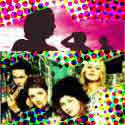
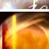

MUSIC// If new music is your bag, noise is the orchard that bears the best fruit during October. Across the broad span of Australian radio to the cover of Rolling Stone magazine, into your CD player and on TV with Rage, noise is the place to come for the newest sounds and the next big things. See the feature below for where to listen out for this lot and more on the artists and their works. |
|
|
|  | feature //
|

| | MUSICAL CHEERS
by // Matt Blackman
The hills are well and truly alive here at noise, with the sound of music permeating multiple media platforms and the DIY musicians and up-and-coming indie groups coming to the fore in welcome style. DJs, ...read more |
more features |
|
| |
creative people //
|

| | Graham Reynolds
Spoz (The Electronic Idiot)
mastermind behind such nefarious creative projects
as "GREEN ...read more |
|
| | Duncan Irving
dunk - web designer, flash dude, illustrator.
I enjoy eating Pac-man ...read more |

| | centipede
A boy-girl duo on an electronic indie tip, Sydney's Centipede have become ...read more |
more people |
|
| | highlights and links //
Quick Guide
For background on the October 2001 festival go to About. To check out the 25+ plus online projects, take a look out our Projects page. To find out what else was went on in noise, take a look at our Festival Guide. |
Even more noise
Into digital art? Take a look at the great works in our Online Gallery page. Animation more your thing? Our Flash page has loads to get into. Music? Have a listen to our Fatboy Slim remixes. |
Wanna make some noise?
It's not to late to enter the noise festival. Check out the True Tales of Love and Hate zine project. Open now to all young Australian creatives. Click here for all the info. |
|
|
| |
|